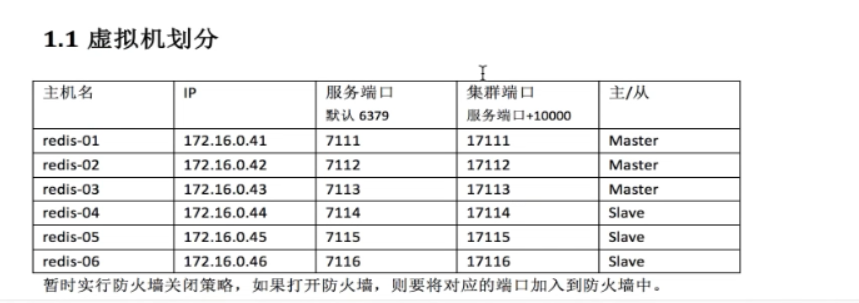
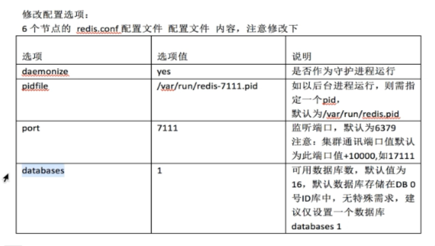
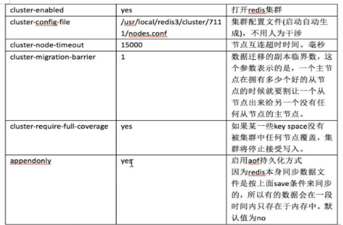

5.1安装部署
1、环境准备，安装常用软件，免去后续麻烦
yum -y install gcc gcc-c++ autoconf libjpeg libjpeg-devel libpng libpng-devel freetype freetype-devel libxml2 libxml2-devel zlib zlib-devel glibc glibc-devel glib2 glib2-devel bzip2 bzip2-devel zip unzip ncurses ncurses-devel curl curl-devel e2fsprogs e2fsprogs-devel krb5-devel libidn libidn-devel openssl openssh openssl-devel libxslt-devel libevent-devel ntp libtool-ltdl bison libtool vim-enhanced python wget lsof iptraf strace lrzsz kernel-devel kernel-headers pam-devel Tcl/Tk cmake ncurses-devel bison setuptool popt-devel net-snmp screen perl-devel pcre-devel net-snmp screen tcpdump rsync sysstat man iptables sudo idconfig git system-config-network-tui bind-utils update arpscan tmux elinks numactl iftop bwm-ng
yum install tcl
安装pip
wget https://bootstrap.pypa.io/get-pip.py> --no-check-certificate
python get-pip.py
#使用国内豆瓣源
mkdir /root/.pip
vi /root/.pip/pip.conf
[global]
index-url = http://pypi.douban.com/simple
trusted-host = pypi.douban.com
yum install golang
#检查版本
go version
2、安装
将下载的包复制到bigdata3
tar -zxvf redis-3.0.3.tar.gz -C /usr/local
进入目录/usr/local/redis-3.0.3使用PREFIX指定安装目录并安装
make PREFIX=/usr/local/redis-3.0.3 install
安装以后可以看到/usr/local/redis-3.0.3目录下有一个bin目录，bin目录里面就是redis命令脚本：
redis-benchmark redis-check-aof redis-check-dump redis-server
3、配置
3.1、虚拟机划分【本来集群是需要6台机器，但是硬件条件有限，只配置三台主节点】

3.2、配置文件
先编辑三个机器配置文件
vi /usr/local/redis-3.0.3/redis.conf
daemonize yes
pidfile /var/run/redis-7111.pid /var/run/redis-7112.pid /var/run/redis-7113.pid
port 7111 7112 7113
databases 1
cluster-enabled yes
cluster-config-file /usr/local/redis-3.0.3/cluster/7111/nodes.conf
/usr/local/redis-3.0.3/cluster/7112/nodes.conf
/usr/local/redis-3.0.3/cluster/7113/nodes.conf
cluster-node-timeout 15000
cluster-migration-barrier 1
cluster-require-full-coverage yes
appendonly yes
参数解释：


然后如下创建文件夹并复制文件
由于物理机资源紧张，暂时不配置从节点，只有三个主节点
bigdata3 192.168.222.130
mkdir -p /usr/local/redis-3.0.3/cluster/7111
cp /usr/local/redis-3.0.3/redis.conf /usr/local/redis-3.0.3/cluster/7111/redis-7111.conf
bigdata2 192.168.222.129
mkdir -p /usr/local/redis-3.0.3/cluster/7112
cp /usr/local/redis-3.0.3/redis.conf /usr/local/redis-3.0.3/cluster/7112/redis-7112.conf
bigdata1 192.168.222.128
mkdir -p /usr/local/redis-3.0.3/cluster/7113
cp /usr/local/redis-3.0.3/redis.conf /usr/local/redis-3.0.3/cluster/7113/redis-7113.conf
启动
bigdata3
/usr/local/redis-3.0.3/bin/redis-server /usr/local/redis-3.0.3/cluster/7111/redis-7111.conf
bigdata2
/usr/local/redis-3.0.3/bin/redis-server /usr/local/redis-3.0.3/cluster/7112/redis-7112.conf
bigdata1
/usr/local/redis-3.0.3/bin/redis-server /usr/local/redis-3.0.3/cluster/7113/redis-7113.conf
------
启动之后用ps命令分别查看实例启动情况
ps -ef|grep redis
4、配置集群
安装ruby和rubygems（注意：需要ruby>1.8.7）
不要直接yum install ruby，只会安装2.0.0，但是2.0.0版本依旧太低
安装yum源
yum install centos-release-scl-rh
yum install rh-ruby24 -y
后面是4是需要安装的版本号
scl enable rh-ruby24 bash
查看ruby版本
ruby -v
yum install rubygems
Gem安装redis ruby接口
gem install redis
【以上三台机子都要安装】
执行redis集群创建命令（只需要在其中一个节点执行一次即可）
cp /usr/local/redis-3.0.3/src/redis-trib.rb /usr/local/bin/redis-trib
注意：Redis群集至少需要3个主节点。*每个节点有3个节点和1个副本，即至少需要6个节点，但是物理机资源不足，只创建三个主节点，放弃从节点。
redis-trib create --replicas 0 192.168.222.130:7111 192.168.222.129:7112 192.168.222.128:7113
（1）给定的redis-trip 程序的命令是create，这表示我们希望创建一个新的集群
（2）这里的—replicas 1表示每个主节点下有一个从节点
（3）之后跟着其他参数则是实例的地址列表，程序使用这些地址所知识的实例来创建新集群
总的来说，以上命令意思就是让redis-trib程序创建一个包含三个主节点集群
接着，redis-trip会打印出一份预想中的配置给你看，你觉得没问题的话，就输入yes，redis-trip就会将这份配置应用到集群当中
如下：
>>> Creating cluster
Connecting to node 192.168.222.130:7111: OK
Connecting to node 192.168.222.129:7112: OK
Connecting to node 192.168.222.128:7113: OK
>>> Performing hash slots allocation on 3 nodes...
Using 3 masters:
192.168.222.130:7111
192.168.222.129:7112
192.168.222.128:7113
M: 227a92f42f29d967f535e9edf88f775aa0e27a07 192.168.222.130:7111
slots:0-5460 (5461 slots) master
M: 1794d406517c36985617ac129e11b144a4227a7d 192.168.222.129:7112
slots:5461-10922 (5462 slots) master
M: ee87b8c8145053cc4aa5969cd31c72c37e413f8f 192.168.222.128:7113
slots:10923-16383 (5461 slots) master
Can I set the above configuration? (type 'yes' to accept): yes
>>> Nodes configuration updated
>>> Assign a different config epoch to each node
>>> Sending CLUSTER MEET messages to join the cluster
Waiting for the cluster to join.
>>> Performing Cluster Check (using node 192.168.222.130:7111)
M: 227a92f42f29d967f535e9edf88f775aa0e27a07 192.168.222.130:7111
slots:0-5460 (5461 slots) master
M: 1794d406517c36985617ac129e11b144a4227a7d 192.168.222.129:7112
slots:5461-10922 (5462 slots) master
M: ee87b8c8145053cc4aa5969cd31c72c37e413f8f 192.168.222.128:7113
slots:10923-16383 (5461 slots) master
[OK] All nodes agree about slots configuration.
>>> Check for open slots...
>>> Check slots coverage...
[OK] All 16384 slots covered.